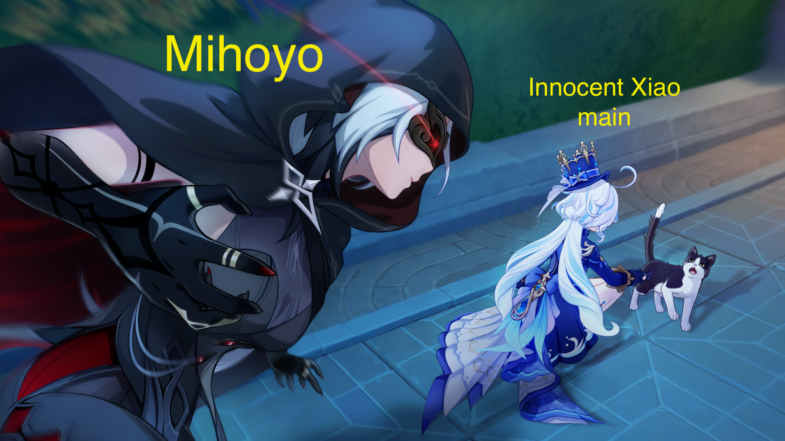

This is what happened to Xiao so far in version 4.x
Flagship Event
Should Paimon's kite contain a confident expression, an afraid one, etc...
It seems artists are deliberate and conscious of facial expressions when designing art for characters.
We will keep this in mind.